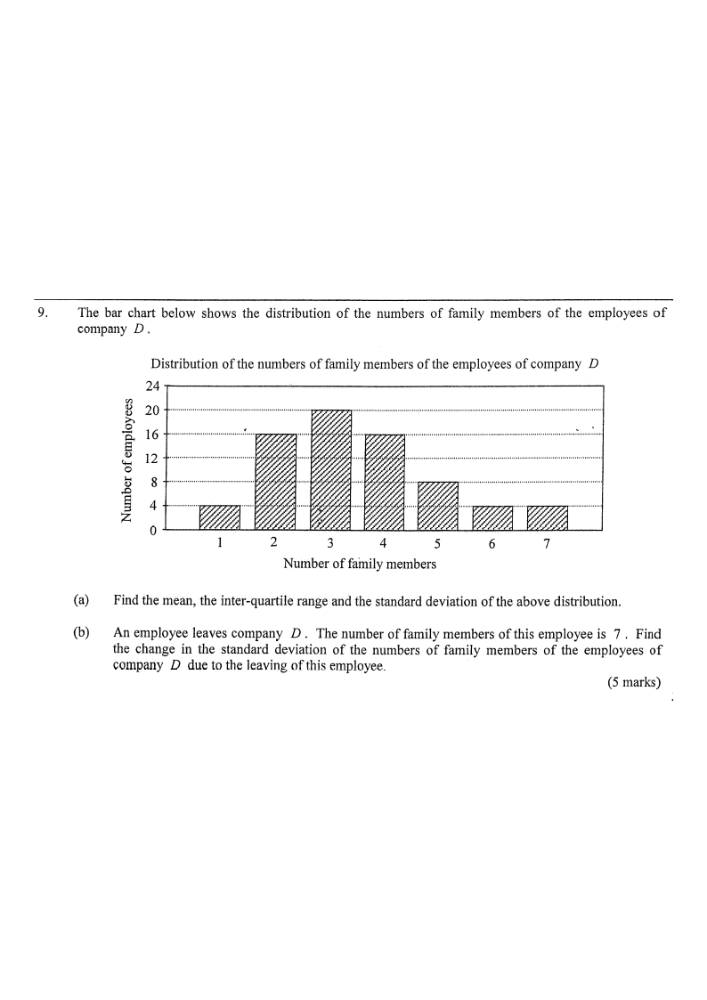

HKDSE Mathematics (Compulsory Part) · Paper 1
15. Statistics — Mean, inter-quartile range, standard deviation & effect of removing a data value
The bar chart below shows the distribution of the numbers of family members of the employees of company \(D\).
Distribution of the numbers of family members of the employees of company \(D\)
| No. of family members \(x\) | 1 | 2 | 3 | 4 | 5 | 6 | 7 |
|---|---|---|---|---|---|---|---|
| No. of employees \(f\) | 4 | 16 | 20 | 16 | 8 | 4 | 4 |
(a) Find the mean, the inter-quartile range and the standard deviation of the above distribution. 4 marks
(b) An employee leaves company \(D\). The number of family members of this employee is \(7\). Find the change in the standard deviation of the numbers of family members of the employees of company \(D\) due to the leaving of this employee. 5 marks

First identify the total number of employees \(N\) and the sum \(\sum f\,x\).
\[ N=\sum f = 4+16+20+16+8+4+4 = 72 \] \[ \sum f x = 1(4)+2(16)+3(20)+4(16)+5(8)+6(4)+7(4) = 252 \]Mean:
\[ \bar{x}=\frac{\sum fx}{N}=\frac{252}{72}=\frac{7}{2}=3.5 \]Inter-quartile range. With \(N=72\), the positional indices are:
\[ \text{median}: \frac{N}{2}=36,\ \frac{N}{2}+1=37 \;\Rightarrow\; \text{average of 36th and 37th} \] Cumulative frequencies: \(4,\ 20,\ 40,\ 56,\ 64,\ 68,\ 72\). Both the 36th and 37th values lie in the group \(x=3\). \[ L_1=3 \] For the quartiles, the upper quartile sits at \(\frac{3N}{4}=54\); the 54th value also lies in the group \(x=3\), while the 55th lies in \(x=4\). Hence \(L_3=4\). \[ \text{IQR}=L_3-L_1=4-3=1 \]Standard deviation. Compute \(\sum f x^2\):
\[ \sum f x^2 = 1^2(4)+2^2(16)+3^2(20)+4^2(16)+5^2(8)+6^2(4)+7^2(4) \] \[ =4+64+180+256+200+144+196=1044 \] \[ \sigma=\sqrt{\frac{\sum f x^2}{N}-\bar{x}^{2}} =\sqrt{\frac{1044}{72}-\left(\frac{7}{2}\right)^{2}} =\sqrt{14.5-12.25}=\sqrt{2.25}=1.5 \]After the employee leaves, the new totals are obtained by removing one value \(x=7\) from the original data set:
\[ N'=72-1=71,\qquad \sum f x' = 252-7=245,\qquad \sum f x'^{2}=1044-7^{2}=995 \]Apply the same shortcut formula to the reduced data set:
\[ \sigma'=\sqrt{\frac{\sum f x'^{2}}{N'}-\left(\frac{\sum f x'}{N'}\right)^{2}} =\sqrt{\frac{995}{71}-\left(\frac{245}{71}\right)^{2}} \]Evaluate numerically:
\[ \frac{995}{71}\approx 14.01408451,\qquad \left(\frac{245}{71}\right)^{2}\approx 11.91033485 \] \[ \sigma'=\sqrt{14.01408451-11.91033485}=\sqrt{2.10374966}\approx 1.451456116 \]The change in the standard deviation is the difference between the two values:
\[ \text{change} = 1.5-1.451456116 = 0.048543884 \]Round to a sensible accuracy (4 significant figures, matching the official marking scheme):
\[ 0.048543884 \approx 0.0485 \]Key technique: from \(\sum f\), \(\sum fx\) and \(\sum fx^{2}\) you can obtain every measure of dispersion used in this question.